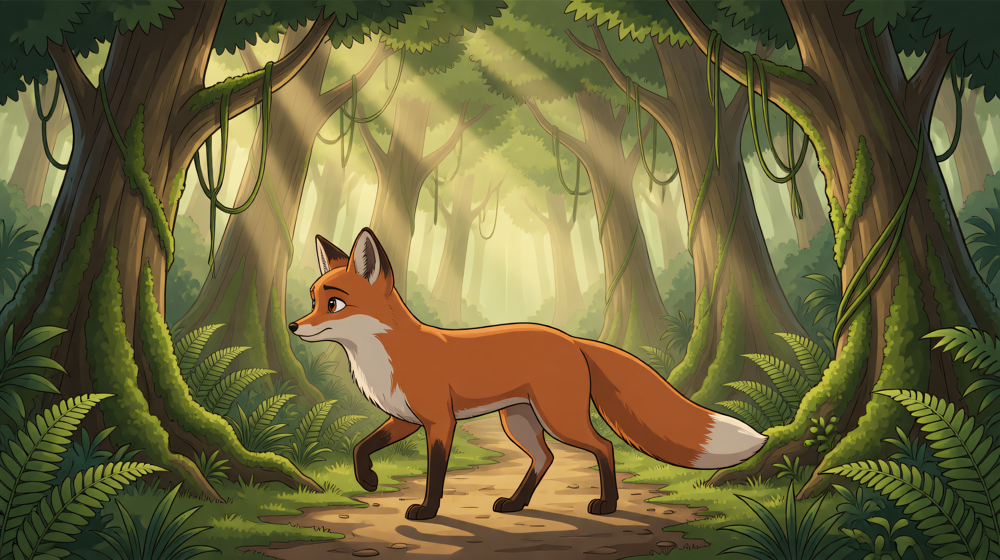

v1g《雨林奔跑》— 分组接力 + 视频长度变量
方法=上一轮验证的尾帧接力（v1f 同款）；变量=①故事（新环境雨林）②视频时长（5s 对照 / 10s 完整动作弧 / 8s）。
链根参考=2D 雨林 walk_side 派生变体（identity+environment+style 三重锚定，全维度过审）。
本页只含 v1g 当前批次（旧策略对比见六层 Gallery，方向已定不再展示）。
链根参考（2D 雨林 walk_side 派生变体）

ref_d27e1a01c36f：identity/costume/defects/style 四维全过审——环境匹配的身份锚（v1e 组间跳变的解法实证）
s02_c01 5s 对照组（奔跑无收势）
参考策略：参考=2D 雨林 walk_side 派生变体（ref_d27e1a01c36f，全维度过审）
尾帧（接力物料）
version=vv_3a418fca ｜ 时长=5.0s
校准记录：偏差记录：预期侧面奔跑→实得正面特写（静止稳定帧，风格纯正 2D，无栅栏无葡萄）→ 触发校准：s03 加转身起跑
s03_c01 10s 长度效果组（完整动作弧+收势）
参考策略：参考=s02 尾帧接力 + 校准后 prompt（转身奔跑→跃倒木→落地站稳回头）
version=vv_c01df4d2 ｜ 时长=10.0s
校准记录：偏差记录：剧本已正确注入（prompt/generate 修复），但故事段语义拉力使葡萄串重现、狐狸趋坐姿——不同故事需新故事段才能彻底摆脱
s04_c01 8s（站稳后继续深入）
参考策略：参考=s03 尾帧接力；SIV 清图循环进行中（该镜 binding 待 SIV 批准后刷新）
未生成
尾帧（接力物料）
version=— ｜ 时长=—s
校准记录：状态：待生成
s05_c01 5s（空地减速停下回头）
参考策略：参考=s04 尾帧接力
未生成
尾帧（接力物料）
version=— ｜ 时长=—s
校准记录：状态：待生成（依赖 s04）
人评要点
①s02→s03 转身起跑的动作衔接（校准协议首次全程生效）②10s 长镜的动作弧完整性 vs 5s
③2D 风格全片一致性（对比 v1d/v1e 的 3D 混入）④葡萄串/拟人坐姿的故事语义拉力——是否需要新故事段才能做"完全不同的故事"。